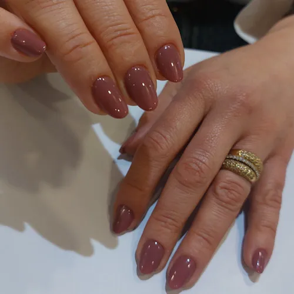
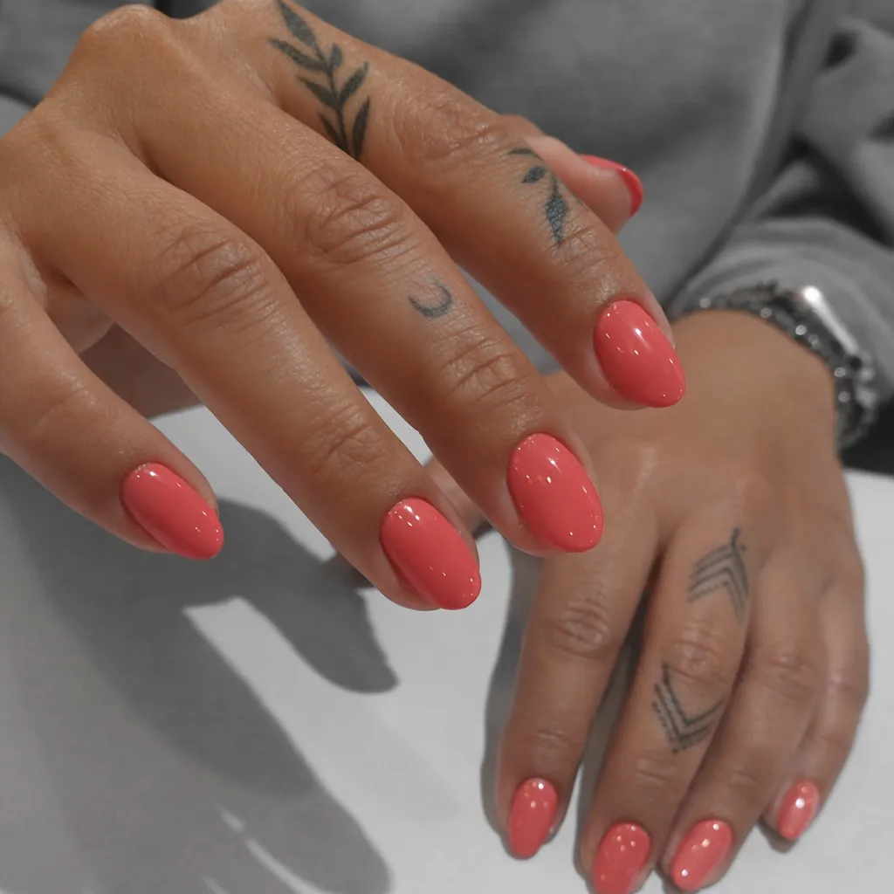
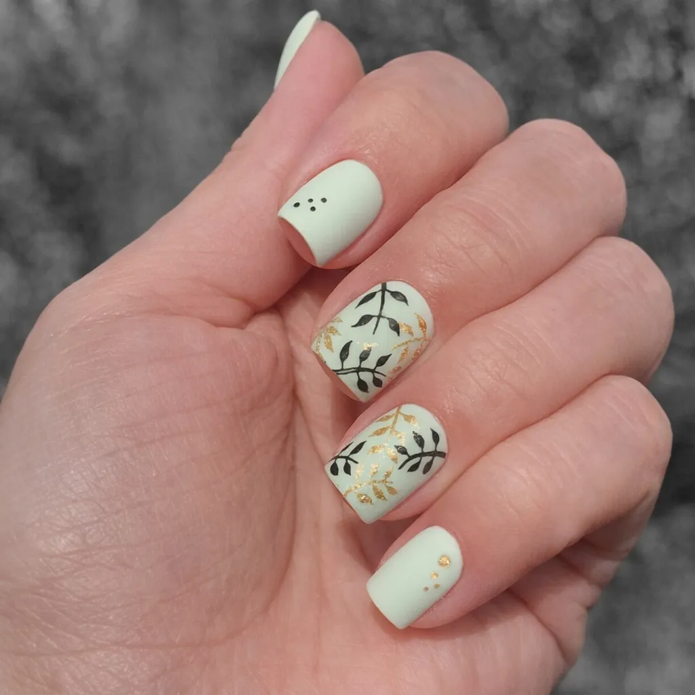
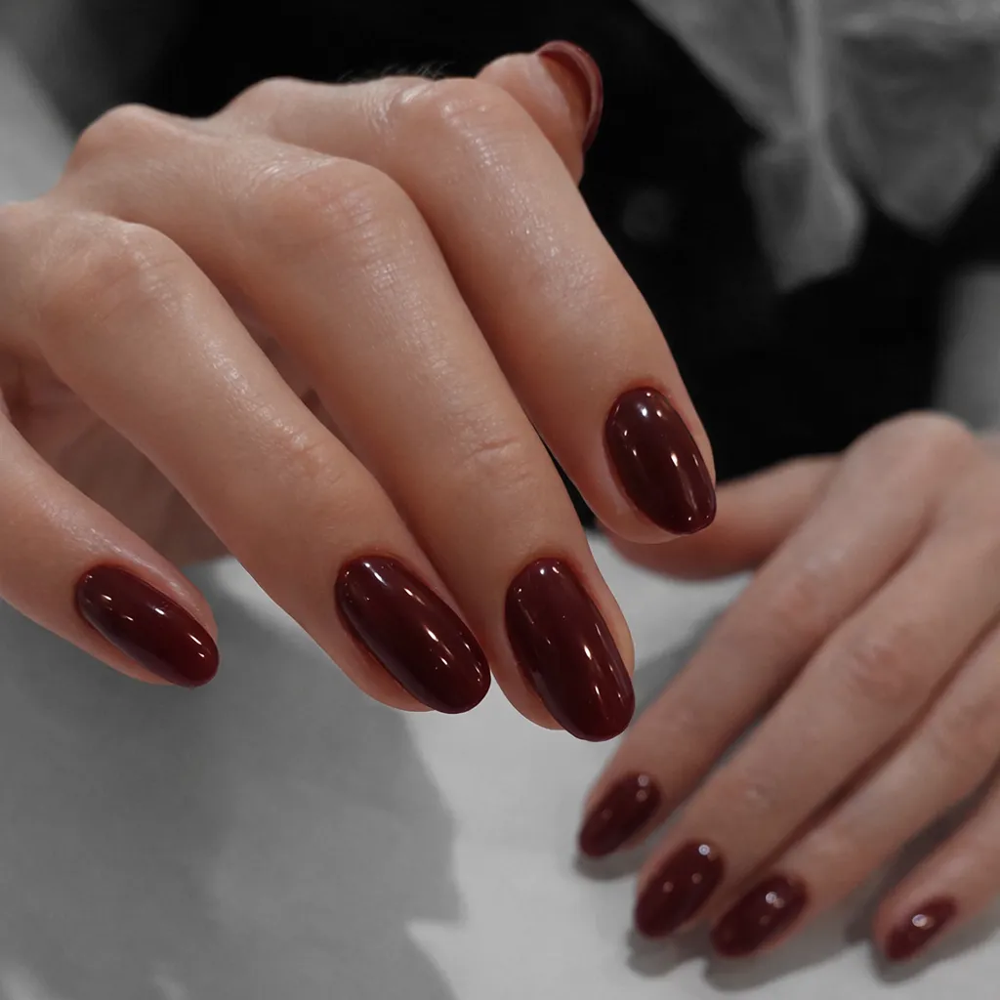
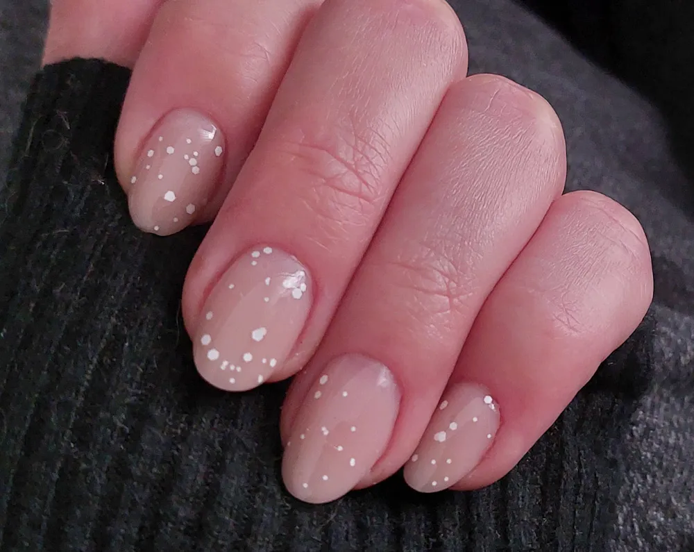
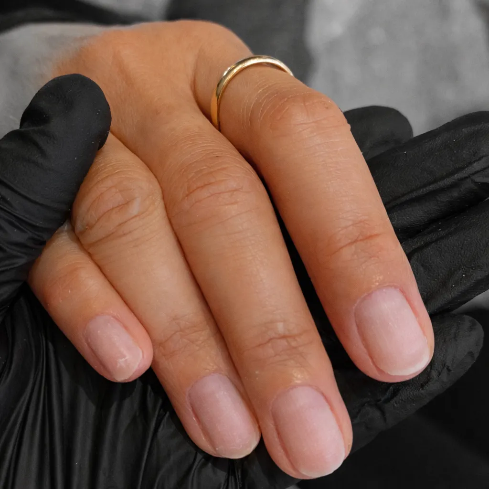
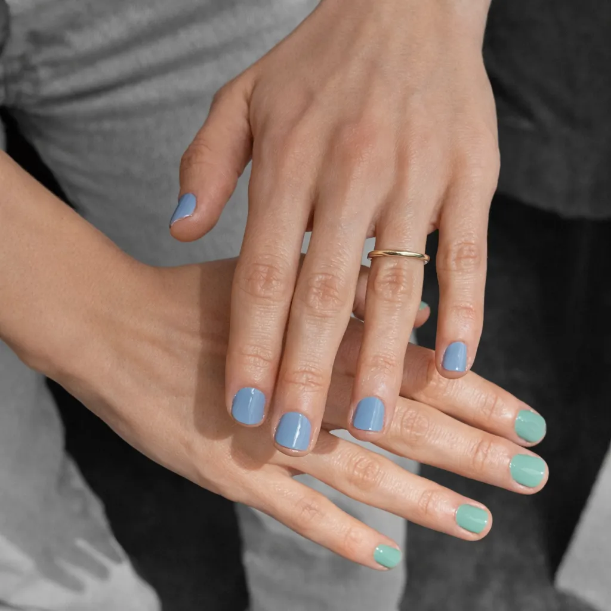
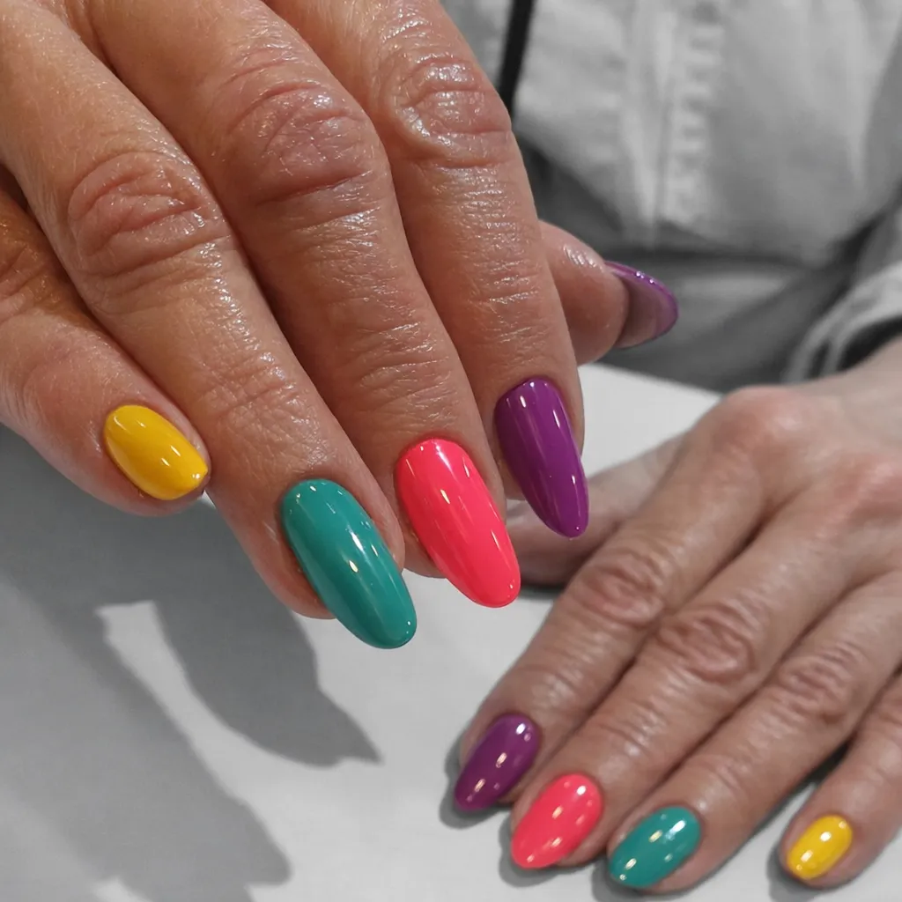
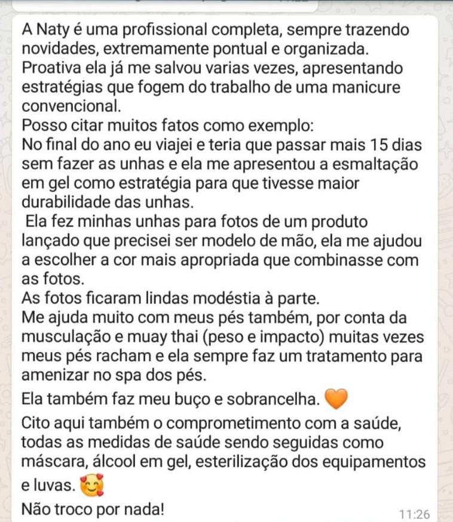

01 / Signature
Extensão de unha
Estrutura fina, resistente e discreta. Para quem quer comprimento sem volume — acabamento natural.
Nail design autoral para mulheres que não pedem licença. Entre o clássico e o alternativo, cada par de mãos vira uma peça única — pensada, desenhada e esculpida à medida.
Me chamo Natália Vicente, sou brasileira, mais precisamente da Grande São Paulo. Trabalho com unhas desde 2018. Antes de encontrar minha grande paixão - o mundo das unhas - me aventurei por um período na área de nutrição. Foi, no entanto, na unhas que consegui unir a atitude do meu estilo alternativo à sutileza das cores que transformam as mãos e acrescentam significado a cada história que eu ouço e sinto.
Acredito que a beleza das unhas deve estar ligada a um trabalho sutil e delicado. Como sempre digo: "sentir dor ao fazer as unhas não é normal." Meu compromisso é oferecer técnica, cuidado e respeito ao cliente, buscando resultados que valorizem a saúde das unhas e expressem personalidade sem abrir mão do conforto.
Natália Vicente — Nail Designer
Manifesto
O meu maior propósito é entregar um trabalho sutil — desde a pintura do verniz, à remoção cuidadosa da cutícula e, acima de tudo, na remoção segura e precisa do produto anterior.
Acredito numa prestação de serviço feita com amor e delicadeza, com foco num acabamento impecável e durabilidade. Cada passo é realizado com atenção aos detalhes: preparação correta da unha, escolha de produtos de qualidade, técnica apurada na aplicação e remoção, e finalização que protege e realça a beleza natural das unhas.
Se procura um resultado elegante, natural e duradouro, será um prazer cuidar das suas unhas com profissionalismo e sensibilidade.
01Rigor técnico 02Desenho autoral 03Atendimento privado 04Saúde em primeiro lugar 05Sem dor. Sem pressa.
01 / Signature
Estrutura fina, resistente e discreta. Para quem quer comprimento sem volume — acabamento natural.
02 / Autoral
Projetos desenhados à mão, colocação de pedrarias, jóias de unhas.
03 / Clássico
Preparo profundo, cutículas, aplicação de verniz tradicional. O básico, feito com rigor de uma boa manicure brasileira.
04 / Cuidado
Esfoliação, hidratação intensiva, aplicação de verniz tradicional ou verniz gel, remoção de calosidades. Ritual longo, toalhas quentes para um momento de descanso.
05 / Biológico
Aplicação de verniz gel biológico Bio Sculpture, que respeita a saúde da unha natural. Proporciona um acabamento brilhante, duradouro e de aspeto natural, sem danificar a unha. Ideal para quem procura beleza e cuidado em simultâneo.
06 / Aftercare
Manutenção a cada 3–4 semanas. Remoção feita tanto de forma química quanto mecânica, tudo depende do trabalho que tens — sem agressão à lâmina natural.









As vagas abrem mensalmente e esgotam rápido. Envia uma mensagem com o serviço pretendido e, se houver, referências — respondo em até 24h.